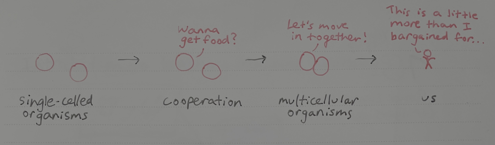

Multicellularity and cooperation

Drawn by me a few years ago
I attended a fascinating talk yesterday by Dr. William Ratcliff from Georgia Tech. His lab runs a long-term evolution experiment in which yeast cells evolve from single-celled to multicellular organisms (check out this excellent article from Quanta, with videos). The experiment has been running for 10,000 generations.
Multicellularity evolved independently several times in the evolutionary past, opening the door to complex life (like us!). While we will never know how exactly our ancestors evolved multicellularity, we can repeat a similar process in the lab to understand the principles behind becoming multicellular.
Cooperation between closely related cells is a common adaptation. Bacteria send each other chemical signals to coordinate their activities (“quorum sensing”) and sometimes clump together in groups to protect themselves from a hostile environment (“biofilms”, like the white plaques that form when you don’t brush your teeth). But there is a key difference between a clump of cells and a genuine multicellular organism. The group of cells has to pass down its traits at the group level, replicating the group rather than the individual. For instance, your skin cells will not go on to create a whole new person– they will die with you, while only your reproductive cells could potentially create another human. This is taken to the extreme with “super-organisms” like bee colonies; only the queen lays eggs to create the next generation, and so the worker bees work not to reproduce themselves but to reproduce the colony.
Multicellularity can break down: some of the individual cells within a larger organism can rebel and prioritize their own replication over that of the whole. In humans and animals, we call this cancer. There is a fascinating parallel between the evolution of cancer cells and the evolution of unicellular organisms like bacteria. For example, a recent paper highlights extrachromosomal DNA, small circular pieces of DNA that carry genes apart from the chromosome, as a phenomenon occurring in both cancer cells and in bacteria (where they are called “plasmids”). Understanding evolution in one system enables us to understand the other.
To me, the analogy between cancer and bacterial evolution emphasizes the importance of synthesizing knowledge across fields. If I thought of myself as strictly a microbiologist and didn’t pay attention to other areas of biology, I would never see connections like this. Working between two fields is also an effective way to carve out a scientific “niche”, because fewer people have expertise in both areas. That’s true on the individual level (for myself, I’m studying both protein design and microbial evolution) and for cooperation (talking to people whose expertise and background differs from yours). Interdisciplinary work is where many of the most exciting discoveries happen. That’s why I attend talks that sound interesting even if they’re not directly relevant to my work, like the one I attended yesterday. Science is awesome.